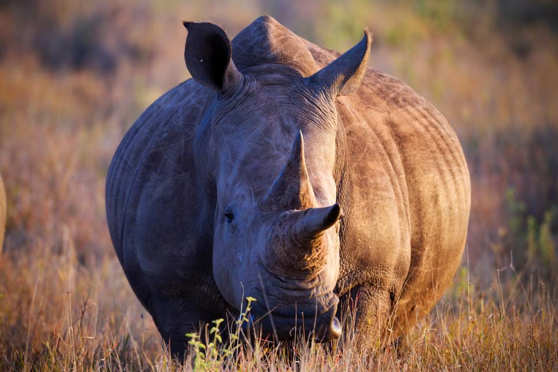
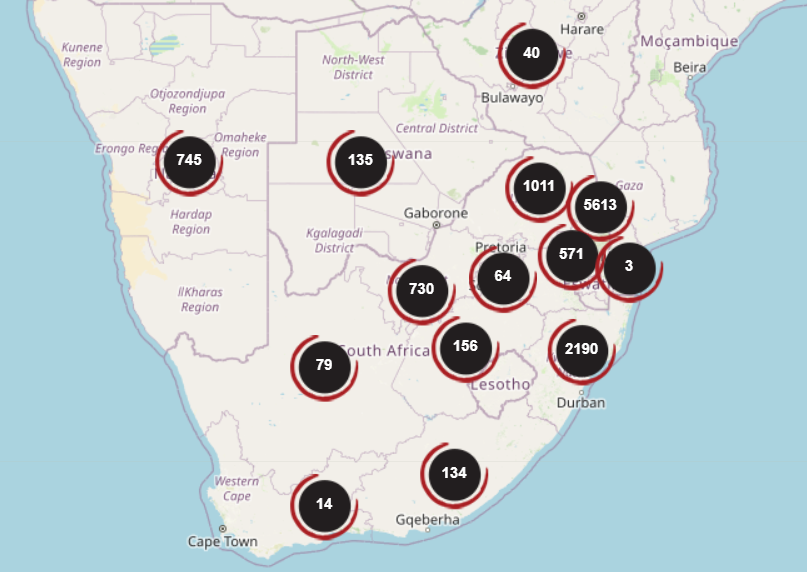

Our problem is how to reduce the number of animals, such as rhinos, being killed and poached. Well, the reason people are hunting and poaching rhinos is mainly for their horns. This is because the horns are worth about $92,500 per kilo, which is actually worth more gram for gram than gold and diamonds. "Many years ago, there weren't fences, and then white people came and put up fences. Now they own the animals, and black people feel like their access to the wild has been taken away," he says. "So they don't respect it. This makes them feel robbed and makes people start hunting the rhinos, which is what causes poaching.
Why is this not sustainable?
This problem is not sustainable because it cannot continue to happen, as the longer this goes on, the more species go extinct. This is because often the rhinos don't survive having their horns taken off, and they could get overhunted for these. This could be a major problem, as if the rhinos go extinct, a lot of families could end up suffering an immense loss of money. Then they could even go so low as to steal from each other just so they could live. This is not sustainable in any way, be it economic, social, or environmental.
Where is it?
It seems to be mostly in South Africa and the surrounding countries. Most hunting occurs in the Kruger National Park. This could be because the rangers are more focused on the tourists looking around the park for poachers. It is also home to most of the world's rhinos, which could make it more attractive to target.

Social Impacts
If there are no rhinos, the rhino horns won't be available to harvest to be used as medicine.
Economic Impacts
People get money from the rhino poaching
Environmental Impacts
Extinction
Animal endangerment